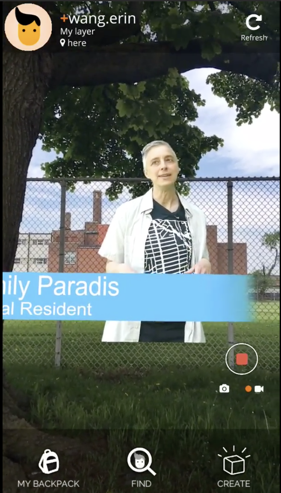
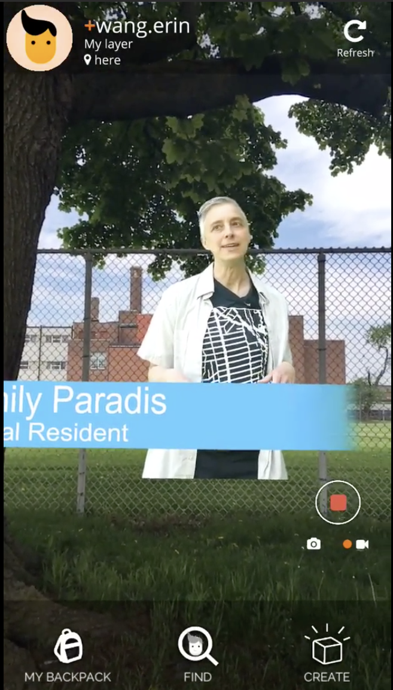

Building a Better Bloor Dufferin
For this project, we were able to meet up with locals from Toronto, Canada to make an AR
Experience prototype for their cause.
Recently, Toronto wants to build highend apartments and malls in local areas.
These developments cause local businesses to close down
and forces those who can't afford the growing cost of living to move out.
Local neighborhoods are now trying their hardest to avoid the dangerous modernization.
One particular neighborhood, Bloor-Dufferin, requested us to make a short
AR experience regarding the potential changes, and how these changes can have a huge
problem in the future.
This AR Experience was done with a Mobile App called Hoverlay.
This AR Experience was done with a Mobile App called Hoverlay.
 
